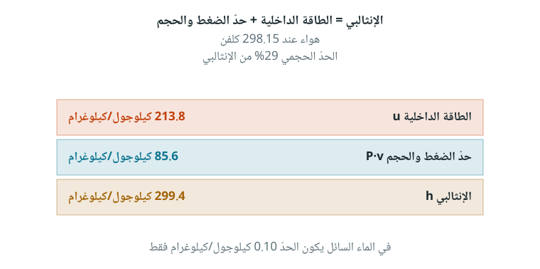

الإنثالبي
Enthalpy
دالة حالة تُعرَّف H = U + PV فتجمع الطاقة الداخلية مع حدّ الضغط والحجم؛ تساوي الحرارة المتبادلة عند ضغط ثابت، ولهذا تُستعمل في تحليل التدفق والمبادلات الحرارية بدل الطاقة الداخلية.
الإنثالبي دالة حالة مركّبة: H = U + PV. ليست نوعًا جديدًا من الطاقة، بل حزمة محاسبة: الطاقة الداخلية زائد حاصل ضرب الضغط في الحجم.
سبب وجودها هندسي وعملي. في نظام مغلق ثابت الحجم تقيس الحرارة المتبادلة تغيّر U. أما في الأنظمة المفتوحة — أنبوب، توربين، مبادل حراري — فالمائع يدخل تحت ضغط ويخرج تحت ضغط، ولدفعه داخل حجم التحكّم وطرده خارجًا يُبذل شغل إزاحة P·v لكل وحدة كتلة. جمع هذا الشغل مع u يعطي الطاقة التي يحملها كيلوغرام المائع معه فعلًا، ولهذا تُجدول جداول البخار H لا u، وتُكتب موازنة المبادل الحراري Q = ΔH.
كيف تعمل الظاهرة؟
عند دخول مائع إلى حجم تحكّم يُبذل عليه شغل يساوي P·v عند الدخول، وعند خروجه يُبذل شغل مماثل على المحيط. الحدّان لا يظهران كتغيّر في الطاقة الداخلية، لكنهما ينتقلان مع الكتلة، فتُجمع مع u في حدّ واحد.
عند ضغط ثابت وبلا شغل محور وبلا تغيّر في الطاقة الحركية أو الكامنة، تخرج الحرارة الداخلة كلها في تغيّر H، ومن هنا التسمية القديمة «الحرارة المحتواة». في غاز مثالي لا تعتمد H إلا على T، لأن u تعتمد على T وحدها ولأن P·v = RT؛ ولذلك يبقى ΔH = c_p ΔT صحيحًا حتى مع تغيّر الضغط، وهو ما لا يصلح للسائل قبل التبخّر بأكثر من عشرين كلفن.
العلاقة بالأرقام
حساب الهواء عند 298.15 كلفن يبيّن حجم الحدّ: u = c_v·T = 213.8 كيلوجول/كيلوغرام، وحدّ P·v = R_s·T = 85.6 كيلوجول/كيلوغرام، والمجموع H = 299.4 كيلوجول/كيلوغرام. نحو 29% من الإنثالبي حدّ إزاحة لا طاقة داخلية.
الفرق c_p − c_v = 0.287 كيلوجول/(كيلوغرام·كلفن) يساوي ثابت الغاز للهواء، وهو أثر الحدّ نفسه في السعة الحرارية. في الماء السائل يكون الحدّ ضئيلًا: 0.10 كيلوجول/كيلوغرام عند الضغط الجوي، لأن الحجم النوعي 0.001 متر مكعب/كيلوغرام؛ ولهذا لا يُفرَّق بين u وh في السوائل عمليًّا بينما يُفرَّق بينهما في البخار فرقًا حاسمًا.
مفاهيم متقاربة
الخلط الأول: «الإنثالبي هي الحرارة». تصح المساواة ΔH = Q عند ضغط ثابت وبلا شغل غير حجمي فقط. في وعاء مغلق صلب تُقاس ΔU، والفرق بينهما هو PΔV للغازات المتولدة أو المستهلكة، وهو فرق كبير في التفاعلات المنتجة للغاز.
الخلط الثاني: إنثالبي التفاعل ليست مجموع طاقات الروابط، بل فرق بين إنثالبيات النواتج والمتفاعلات، وتعتمد على الحالة المرجعية المختارة للعناصر. الخلط الثالث: H دالة حالة لكن قيمتها المطلقة غير معروفة، فتُعيَّن نقاط مرجعية اصطلاحية؛ ولا معنى لرقم إنثالبي بلا ذكر المرجع. والخلط الرابع: الإنثالبي ليست الطاقة المتاحة للعمل، فجزء منها لا يُحوَّل في أي دورة فعلية، ويُقاس ذلك بالطاقة الحرة لا بالإنثالبي.
حدود التطبيق
للغاز المثالي H دالة في T وحدها؛ في الغازات الحقيقية تعتمد أيضًا على الضغط، ويظهر ذلك في معامل جول–طومسون: التمدد الاختناقي عند إنثالبي ثابت يبرّد معظم الغازات لكنه يسخّن الهيدروجين والهيليوم تحت درجة الانعكاس.
لا تُختصر الموازنة بالإنثالبي إذا كان الشغل المحوري كبيرًا أو تغيّرت السرعة (توربين، فوهة، ضاغط)، فيلزم حينها حدّا v²/2 وg·z. وفي الأنظمة النابضة أو غير المستقرة يلزم حدّ تخزين الكتلة والطاقة معًا. أما في المواد الصلبة فحدّ P·v مهمل تمامًا، وتعتمد H على المسار الحراري فقط.

| الكمية | القيمة | المصدر |
|---|---|---|
| الطاقة الداخلية النوعية للهواء عند 298.15 كلفن | 213.8 كيلوجول/كيلوغرام | [1] |
| حدّ P·v للهواء عند 298.15 كلفن | 85.6 كيلوجول/كيلوغرام | [1] |
| الإنثالبي النوعية للهواء عند 298.15 كلفن | 299.4 كيلوجول/كيلوغرام | [1] |
| الفرق بين السعتين c_p وc_v للهواء | 0.287 كيلوجول/(كيلوغرام·كلفن) | [1] |
| حدّ P·v للماء السائل عند الضغط الجوي | 0.10 كيلوجول/كيلوغرام | [2] |
المصادر
- 1 Enthalpy — NASA Glenn Research Center — Beginner's Guide to Aeronautics. www1.grc.nasa.gov/beginners-guide-to-aeronautics/enthalpy-2-2/ · اطُّلع عليه 2026-11-16
- 2 Heat, Work and Energy — The Engineering ToolBox. www.engineeringtoolbox.com/heat-work-energy-d_292.html · اطُّلع عليه 2026-11-16
- 3 Thermochemistry — OpenStax, Chemistry 2e. openstax.org/books/chemistry-2e/pages/5-introduction · اطُّلع عليه 2026-11-16
استشهد بهذا المصطلح
الصيغتان مبنيتان من بيانات الصفحة نفسها: العنوان والتاريخ ورابط النسخة المنشورة.
الإنثالبي — Enthalpy. (2026). ديوان المعرفة — انفراد. https://infiradev.com/diwan/terms/enthalpy.html
@misc{enthalpy2026,
title = {الإنثالبي},
titleaddon = {Enthalpy},
howpublished = {{ديوان المعرفة — انفراد} — مرجع علمي عربي},
year = {2026},
url = {https://infiradev.com/diwan/terms/enthalpy.html},
urldate = {2026-11-16},
note = {مراجعة علمية: مراجعة آلية — ديوان المعرفة (روابط المصادر + عقد المحتوى + وجود الرسم) 2026-11-16}
}
راجعه: مراجعة آلية — ديوان المعرفة (روابط المصادر + عقد المحتوى + وجود الرسم) 2026-11-16 · 2026-11-16 · آخر تحديث 2026-11-16